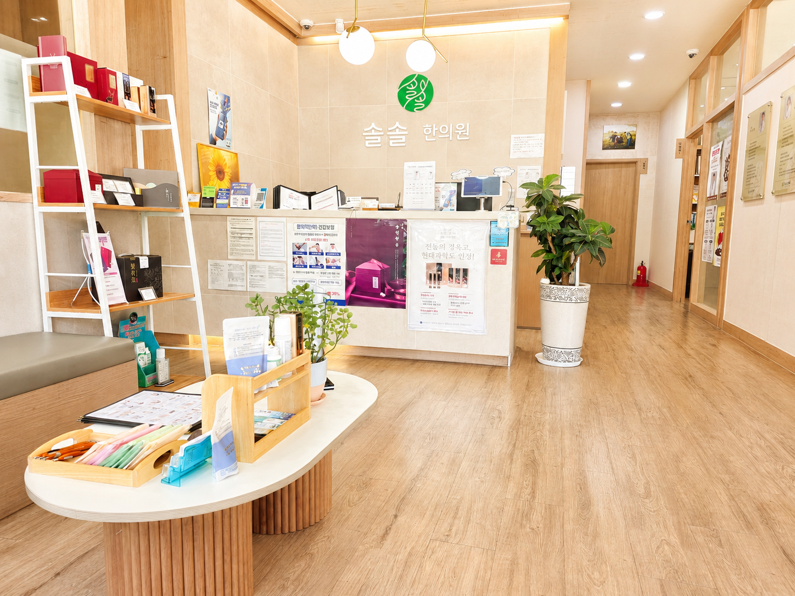

목·어깨·허리 통증
사고 이후 근육과 관절 주변의 통증, 뻣뻣함이나 움직일 때의 불편을 호소하는 경우가 있습니다.
교통사고 이후에는 목·어깨·허리의 통증뿐 아니라 두통, 어지럼, 수면의 변화, 긴장감이나 불안 등 다양한 불편이 나타날 수 있습니다.

증상의 종류와 정도는 사고 상황과 개인의 상태에 따라 다를 수 있습니다.
사고 이후 근육과 관절 주변의 통증, 뻣뻣함이나 움직일 때의 불편을 호소하는 경우가 있습니다.
사고 이후 두통이나 어지럼, 머리가 무겁게 느껴지는 등의 불편이 동반될 수 있습니다.
사고 이후 잠들기 어렵거나 자주 깨는 등 수면의 변화와 긴장감, 불안 등의 불편을 호소하기도 합니다.
부딪히거나 순간적인 충격을 받으면서 여러 부위에 염좌나 타박과 관련된 증상이 나타날 수 있습니다.
처음에는 한 부위가 불편하다가 며칠 지나 다른 부위의 불편을 느끼는 경우도 있습니다.
통증이나 수면 변화 등으로 인해 평소의 업무나 일상생활이 불편하게 느껴질 수 있습니다.
교통사고 직후에는 긴장된 상태이거나 증상이 아직 뚜렷하지 않아 큰 불편을 느끼지 못하는 경우도 있습니다.
염좌나 타박의 특성상 초기 며칠 동안 통증이 더 뚜렷해지거나, 처음과 다른 부위에서 불편이 느껴지는 경우도 있습니다.
따라서 사고 이후에는 현재의 증상뿐 아니라 증상이 어떻게 변하고 있는지 경과를 함께 살펴보는 것이 중요합니다.
구체적인 진료 방법은 사고 상황, 증상, 연령 및 현재 상태에 따라 달라질 수 있습니다.
사고 이후 목이나 허리의 통증과 함께 두통, 어지럼, 수면의 변화, 긴장감이나 불안 등 몸과 마음에 여러 변화가 나타날 수 있습니다.
솔솔한의원에서는 통증 부위만을 따로 보기보다 사고 전후의 상태와 증상이 시작된 시점, 수면과 일상생활의 변화 등을 함께 확인합니다.
자동차사고 후 한약은 모든 환자에게 동일하게 처방하는 것이 아니라 사고 이후 나타난 증상과 몸의 상태를 살펴 처방 여부를 결정합니다.
통증과 근육의 긴장, 타박과 관련된 불편뿐 아니라 두통, 수면의 변화, 긴장감 등 함께 나타나는 증상도 고려해 한약 처방을 상담할 수 있습니다.
구체적인 처방 내용은 환자의 현재 상태와 진료 결과에 따라 달라질 수 있습니다.
소아에서도 자동차사고 이후 여러 불편이 나타날 수 있습니다. 아이들은 자신의 증상을 정확하게 표현하기 어려운 경우도 있어 평소와 다른 수면, 두통, 보챔, 활동 변화 등이 있는지 함께 살펴봅니다.
필요한 경우 소아침이나 피내침처럼 자극을 비교적 적게 줄 수 있는 방법을 고려할 수 있으며, 물리치료 등도 아이의 상태에 따라 활용할 수 있습니다.
어떤 진료가 적절한지는 아이의 연령, 증상 및 진료 결과에 따라 결정합니다.
염좌나 타박의 특성상 사고 직후보다 초기 며칠 동안 통증이 더 뚜렷해지거나 불편한 부위가 넓어지는 경우가 있습니다. 증상의 변화가 있다면 진료 시 그 경과를 함께 알려주세요.
현재 상태에 따라 침, 뜸, 부항, 약침, 추나, 한약, 경피경근요법 등의 물리치료 등을 활용할 수 있습니다. 구체적인 방법은 진료 후 결정합니다.
네. 사고 이후 나타난 두통, 어지럼, 수면의 변화, 긴장감이나 불안 등도 진료 시 함께 말씀해주시면 현재 상태를 살펴보는 데 도움이 됩니다.
네. 아이의 연령과 증상을 고려해 진료합니다. 필요한 경우 소아침, 피내침 등 자극이 비교적 적은 방법을 고려할 수 있습니다.
네. 사고 이후 나타난 통증, 근육의 긴장, 타박과 관련된 불편뿐 아니라 두통이나 수면 변화 등 현재의 상태를 종합적으로 살펴 필요한 경우 한약 처방을 상담합니다.
네. 자동차사고 관련 진료도 네이버 예약을 이용할 수 있습니다. 예약 시 자동차사고 관련 진료임을 함께 알려주시면 됩니다.
자동차사고 이후 나타날 수 있는 증상과 진료에 관한 이승환 대표원장의 관련 칼럼을 외부 기사에서 확인할 수 있습니다.
관련 칼럼 읽어보기 →자동차사고 관련 진료도 네이버 예약을 이용하실 수 있습니다.